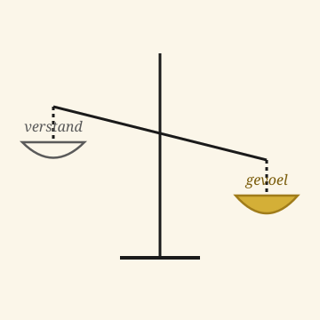

Het Open Vizier · Editie Leiderschap
Een krant over denken zonder oogkleppen

★ Editie Leiderschap
Twaalf artikelen die het scherpste politieke en organisatorische vraagstuk van onze tijd uitwerken: wie leidt waarmee. Het verstandsleiden dat nu in de mode is, verlamt het organisme dat het bestuurt. Het gevoelsleiden — oergevoel, lef, mensenkennis — is wat werkelijk beweegt.
★ De stelling van deze editie
Het verstandsleiden dat sinds de jaren negentig dominant is geworden, heeft een bepaald soort bestuurder voortgebracht: data-gedreven, risicomijdend, juridisch ingebed, en bovenal angstig voor het oordeel van zijn omgeving. Het resultaat is een leiderschap dat veel rapporteert en weinig beweegt.
Het gevoelsleiden is het oudere, oorspronkelijkere model. De leider die weet wat goed is voor de mensen die hij leidt — niet omdat een spreadsheet het hem vertelt, maar omdat zijn oergevoel hem het signaal geeft. Hij durft te beslissen voordat de cijfers compleet zijn. Hij durft te corrigeren als blijkt dat hij verkeerd zat.
Verstandsleiden levert managers. Gevoelsleiden levert leiders. Een organisatie heeft beide nodig, maar in de juiste volgorde.
★ Bestuurlijke vernieuwing
Een ontwerp dat hier is bedacht, doordacht en doorgerekend. Tien gemeenten in cijfers, plus een open voorstel aan wie het aandurft.
ANALYSE · TIEN GEMEENTEN · JUNI 2026
Wat gebeurt er met een stad als de helft van het stadhuis verdwijnt? Tien gemeenten doorgerekend.
Lees de analyse →OPEN VOORSTEL · TWENTE · JUNI 2026
Een open voorstel aan wie het aandurft — wie zet als eerste de stap?
Lees het voorstel →★ I · De grondslag
Vier artikelen die het beginsel uitleggen — wat het oergevoel is, hoe het werkt in de drie hersenlagen, en waarom een mens die hoofdzakelijk vanuit zijn voorhoofdskwabben leidt geen leider is maar een manager.
Editie 3 · grondslag
Het beginsel dat aan alle latere lagen voorafgaat. Hoe het oergevoel ontstaat, wat het doet, en waarom iedere goede leider er meer mee werkt dan hij toegeeft.
Lees het grondslagartikel →Editie 3 · structuur
Reptiel, zoogdier, mens — een leider die alleen vanuit de derde laag opereert, mist twee derde van zijn vermogen. De drie hersenlagen als gereedschap voor de leider die alle drie wil benutten.
Lees de structuur →Manifest · oproep
Een open oproep om het oergevoel zijn plaats terug te geven in bestuur, onderwijs en bedrijfsleven. Niet als esoterisch begrip, maar als concreet werkinstrument dat door verstandsleiden is verbannen.
Lees het manifest →Editie 3 · communicatie
Hoe twee leiders met elkaar communiceren via een laag die geen van beiden expliciet benoemt. Waarom een goede leider in een vergadering meer informatie krijgt uit de toon dan uit de woorden.
Lees over communicatie →★ II · De praktijk
Drie artikelen die laten zien hoe gevoelsleiden er in de praktijk uit ziet. Een CEO die ermee leidt, het oergevoel als dagelijks gereedschap in zes beroepen, en de scherpe metafoor van wie op de bok zit en wie op de bagagedrager.
Editie 4 · sleutelartikel
Het sleutelartikel van deze editie. Een goede CEO leidt vanuit zijn oergevoel, niet vanuit de vrees voor het verstandsoordeel van zijn omgeving. Wat het verschil maakt — voor het bedrijf, voor de mensen, en voor de leider zelf.
Lees over de CEO →Editie 3 · beroepspraktijk
Concreet en stevig: hoe het oergevoel doorwerkt in zes verschillende beroepen — van de arts tot de docent, van de ondernemer tot de ambachtsman. Niet alleen voor leiders, maar voor wie überhaupt iets te zeggen heeft.
Lees over de beroepspraktijk →Triptiek · juni 2026
Een triptiek over drie soorten leiderschap zonder subsidie-afhankelijkheid. Wie zit op de bok en wie op de bagagedrager — en wat het verschil maakt voor wie de richting bepaalt en wie meeklimt.
Lees de triptiek →★ III · Het tegenmodel
Drie artikelen die laten zien wat er misgaat als het verstand de leidende rol overneemt van het gevoel. De actor die zichzelf de regel maakt, het retrospectief van een generatie die te ver doorsloeg in rationalisering, en het tegenmanifest.
Beginsel · systeem
Wie handelt, schept de regel. Een beginsel dat verstandsleiders structureel vergeten — zij denken dat de regel handelt. Hier de scherpe correctie: zonder een actor met oergevoel is geen regel werkbaar.
Lees het beginsel →Editie 3 · retrospectief
Achterom kijken naar wat de naoorlogse generaties wel en niet hebben doorgegeven. Welke kostbare elementen verloren zijn gegaan in de doorgeschoten rationalisering — en welke we kunnen terughalen.
Lees het retrospectief →Editie 2 · manifest
Een manifest voor een democratische vorm die boven de partij staat. Een politiek systeem waar gevoelsleiden weer mag, en waar de leider zich verantwoordt aan de mens, niet aan zijn partijbestuur.
Lees het manifest →★ IV · De voorbeelden
Twee artikelen uit Editie 5 over zeven concrete leiders en zeven concrete gereedschappen — de mensen die het oergevoel-leiderschap in hun werk hebben aangetoond, en de instrumenten waarmee zij het hebben gedaan.
Editie 5 · zeven mensen
Zeven Zwitserse leiders die in hun loopbaan steeds vanuit hun oergevoel hebben gehandeld — en daarmee het continent op kritieke momenten een andere koers hebben gegeven. Wat zij gemeen hadden, en wat wij van hen kunnen leren.
Lees over de zeven →Editie 5 · zeven gereedschappen
Zeven werktuigen waarmee de Carbon-Alert-architectuur werd opgebouwd — niet door management, maar door leiderschap. De gereedschappen die het verschil maakten, en het soort leider dat ze in handen heeft.
Lees over de zeven →Voor bestuurders en CEO's: deze editie is geen aanval op rationaliteit. Zij is een correctie op de overdosis ervan. Het verstand blijft uw motor — maar het oergevoel is uw kompas. Wie zonder kompas op volle motor rijdt, raakt geblesseerd.
Voor jonge leiders: u krijgt op de opleidingen verteld dat data en proces het belangrijkst zijn. Hier hoort u dat u ook iets anders heeft — uw oergevoel. Gebruik het.
Voor coaches, HR-professionals en managementopleiders: hier de stof om de oergevoel-laag weer een plaats te geven in de leiderschapsontwikkeling die u faciliteert. Zonder verstandsleiden af te schaffen — door er gevoelsleiden naast en boven te zetten.